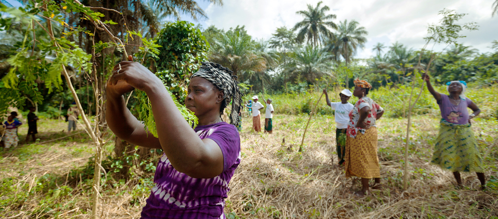

1️⃣ Focus Areas under SDG 13 (Climate Action)
Experts will explore key strategies to accelerate climate action, including:
•Strengthening resilience to climate-related disasters;
•Mobilizing and realigning financial flows to fund climate action and ensure a just transition, especially for developing countries;
•Mainstreaming climate concerns into national policies and planning;
•Improving climate education and public awareness on emission reduction and adaptation.
2️⃣ Alignment with COP28 Outcomes
•Building on recent COP28 commitments to pursue a just, inclusive transition to net-zero.
Discussions will cover:
•Integrating SDG targets into updated Nationally Determined Contributions (NDCs);
•Supporting vulnerable groups – including indigenous peoples, women, and youth;
•Enhancing climate capacity in least developed countries (LDCs) and small island developing states (SIDS).
3️⃣ Expert Group on Climate and SDG Synergy
The independent Expert Group will meet in Tokyo to:
•Continue building evidence for the co-benefits of integrated climate and SDG action;
•Prepare the expanded 2024 edition of the Global Report on Climate and SDG Synergy, following the success of the 2023 version.
4️⃣ Urgency of Action
•Despite some progress, the world is off track on both climate goals and SDGs.
•Climate change impacts are intensifying each year.
•UN Secretary-General António Guterres:
“Climate action is the 21st century's greatest opportunity to drive forward all the Sustainable Development Goals.”
5️⃣ Public Event on Planetary Crises – March 6
A hybrid event (in-person in Tokyo + virtual) will be held on 6 March, focusing on:
•Climate change
•Biodiversity loss
•Pollution
•Aim: Promote synergistic approaches to address this triple planetary crisis.
 To go places and do things that have never been done before – that’s what living is all about.
The experts will be looking at issues under SDG 13, by which countries committed to taking urgent climate action, such as: how to strengthen resilience to climate disasters; how to realign financial flows and mobilize the massive finance needed for climate action and a just transition, particularly in developing countries; and how to better integrate climate concerns into national policies and planning across the board, as well as how to improve education and public awareness about reducing emissions and adapting to new climate realities.
Aligned with recent decisions by governments at COP28 to work towards a just and inclusive transition towards net-zero and climate-compatible pathways, experts at the Tokyo meetings will also examine how the Sustainable Development Goal targets can be better integrated into each country's updated commitments (NDCs) under the Paris Agreement; how to support the climate-related needs of indigenous peoples, women, youth and other vulnerable groups; and how to promote capacity for climate action in least developed countries and small island nations.
Also taking place in Tokyo over those three days, the independent Expert Group on Climate and SDG Synergy will meet in person to continue its work building evidence for the co-benefits of tackling the climate and SDG crises together, synergistically. Following recent consultations, the group is planning to issue an expanded and more inclusive 2024 edition of its groundbreaking 2023 Global Report on Climate and SDG Synergy.
Despite progress in many areas, both the SDGs and climate action are far off track from the targets set under the 2030 Agenda and the Paris Agreement, with the negative impacts of climate change growing in intensity each year. UN Secretary-General António Guterres sees the two agendas as closely interlinked, stating that “climate action is the 21st century's greatest opportunity to drive forward all the Sustainable Development Goals."
A public event -- both in-person in Tokyo and virtual -- is being organized on 6 March on climate change, biodiversity loss and pollution, looking at synergistic approaches to addressing this triple planetary crisis. More information is available online.